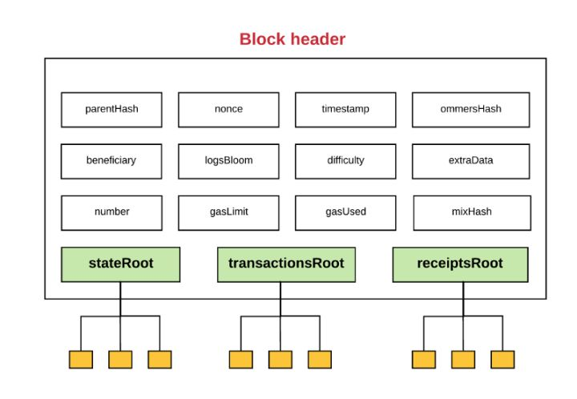
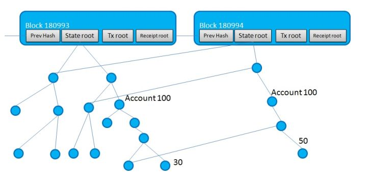
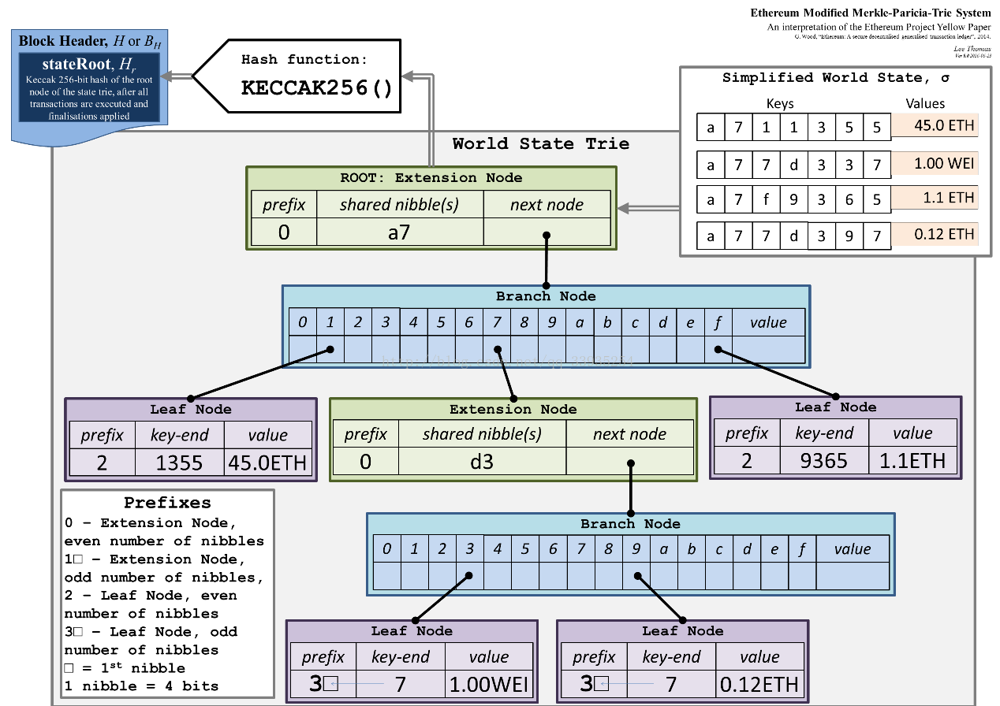

由于上周犯了个时间分配不当的严重错误，所以本周依然干上周的活。现今的区块链平台主要有那些，他们是如何达成共识的，他们的账本模型有什么调节空间，对于分布式的DNS系统，可以怎么样设计账本模型。
这周的主要内容有两个：
- 比特币difficulty是什么
- 了解以太坊的基本架构
比特币difficulty
挖矿难度和target成反比，指难度为1时的target值，写成公式如下：
比特币期望每10分钟挖出1个区块，平均两个星期会挖出2016个区块。每两个星期会根据期望值更新一次挖矿难度：
以太坊
以太坊是維塔利克·布特林受到比特币启发提出的一种加密货币，主要使用golang进行开发，于2015年7月30日上线。相比比特币，以太坊在合约、区块结构、共识方式等方面都有着极大幅度的变化，是作者在完全理解比特币原理后，从头开始优化的产物。
先就使用上面4篇文章简要了解一下以太坊，由于黄皮书中用的是混合程序员和数学家两种难以读懂的风格写出来的，所以需要一点额外的资料辅助阅读。
以太坊合约
比特币的智能合约基于一种图灵非完备的堆栈语言，它没有函数、循环等结构；出发点是缩短恶意执行的时间，防止浪费资源。以太坊引入了合约(Contract)的概念，以太坊合约也是一段代码，它基于图灵完备的语言，于EVM虚拟机运行，因此能够使用高级语言实现，现常用Solidity(一种类js的高级语言)实现。以太坊合约在被创建之后就不能更改，这和比特币的脚本一样。
以太坊合约是理解以太坊所需要的首要内容。必须深刻理解一个地址既可以代表一个用户，也可以代表一段合约代码
果要搞类似DNS那样的项目，以太坊合约应该是个无法避开的知识点。
以太坊地址
比特币的地址由同时持有公私钥的用户拥有，使用公私钥可以操作自己的交易，基于以太币交易的以太坊也同样有着这样的功能。但是，以太坊地址不仅可以由用户拥有，也可以由以太坊合约所拥有。当合约被创建的时候，它就会被赋予一个地址，当该地址收到被执行交易时，合约的代码就会被执行。
EVM和gas
Java代码在编译时，会产生class文件，里面有着JVM虚拟机对应的编码，接着JVM执行class文件的内容使得Java代码得到执行。EVM也一样，合约代码像java代码一样，先可以被编译为EVM语言，然后再被执行，这使得智能合约甚至能被弄成高级语言那样。
合约示例(Solidity语言)：
1 | // 引用自 https://blog.csdn.net/loy_184548/article/details/78010371 |
图灵完备语言带来方便性的同时也带来了麻烦，循环操作可能会恶意浪费计算资源，这也是比特币设计图灵非完备语言时想要避免的。以太坊为了避免这种麻烦设计了gas机制，每在EVM使用计算资源时都会消耗gas值，当gas消耗完毕后，合约就会终止。而每单位的gas都对应着一部分的交易费。
以太坊合约的利用场景示例
- 以太坊官方客户端中有多人钱包的功能，比如某合约由3个地址拥有，可以从该地址每天转出100ETC，需要2人确认
- 某人想要规避加密货币大幅度的涨价跌价的风险，则与商人(风险承担者)创建一个合约，首先两人各转价值1000CNY的ETC到合约地址；1个月后，无论ETC的价格波动如何，都会将价值1000CNY的ETC重新转回原地址，剩下的部分则转会风险承担者的地址
- 完全公开透明的赌博行业
以太坊区块结构
以太坊数据结构、存储、区块头的关系与分析-csdn-Pony_chen
以太坊中的Ghost协议-csdn-train_for_skills
以太坊最基本的交易存储也和比特币不一样。比特币中的交易是以UTXO的方式存储的，当我们需要知道自己的余额的时候，需要统计自己所有的末端交易，将末端交易累加才会得到自己最终的余额。以太坊改进了这种统计方式，它将类似银行转账的方式记录交易。然后再对每笔交易增加一个nouce值表示该账户转账的次数，由用户的私钥签名保护。
以太坊区块存储的信息和比特币类似，但相比与比特币，以太坊增加了gas、状态树、收据树等复杂的概念。
以太坊区块新增的数据结构主要包括了状态树、交易树和收据树
- 状态树：用于存储每个用户(合约)地址对应的信息，比如余额等。
- 交易树：用于打包单个区块对应的交易，和比特币的类似，只不过格式不同。
- 收据树：我的理解就是每笔交易的详细信息，它与交易树是一一对应的。

MPT(Merkle Patricia Trie)
这里只简略介绍这个数据结构。首先介绍一下Trie，字典树，一般可以压缩储存多个具有相同前缀的字符串，使用它很容易实现多字符串的查询、匹配等操作；之后是Patricia树，也就是路径压缩后的字典树，解决了字典树中孤立节点过多的导致空间存储过大的问题；MPT，在压缩字典树中增加了对子节点哈希值的存储，根哈希值会被存储在区块中。这样只要存在某两个节点的哈希值相同，那么它的子树完全相同。
总而言之，MPT就是一棵压缩字典哈希树

世界状态树
与基于UTXO的比特币不同，以太坊是基于状态的，所谓状态就是每个对应账户、合约的详细信息，一般比较重要的就是账户余额、合约EVM代码。每次交易产生时，都必须验证账户余额或者是gas是否足够。
由于MPT和线段树之类的一样，是那种更改时只更改树上一条链的节点内容，且逻辑结构不发生变化的树形数据结构。故可对它进行可持久化操作。每次区块更新时，记录其变更的节点即可完成状态的可持久化存储。
世界状态树本质上是一颗key-value(address-account)存储的可持久化MPT

交易树和收据树
交易树和收据树用Merkle树维护，其结构和比特币类似。
交易树存储的是该区块中所有的交易信息，提供可轻量化操作。储存交易的格式和比特币的UTXO不同，以太坊的交易使用类似from A to B value X的转账格式存储交易。
收据树存储的是该笔交易的结果，包括用掉合约的gas值、该交易的类型、交易的日志等。
以太坊的共识机制
Ghost协议

在比特币网络中，当出现两个矿池同时挖出一个区块后，各自会往自己相近的节点传播，区块链出现分叉。当下一个区块被挖出的时候，它会接上它认为的上一个区块，然后再把新的区块再次传播出去。这时，原本出现分叉的区块就会被抛弃，挖到的区块奖励也会消失，而12.5BTC按现在的价格大概是86万人民币，损失可谓是相当惨重的。
由于以太坊将期望出块间隔从比特币的10分钟调整为了15秒，在这么短的时间内，全网难以达成共识，孤块(orphan blocks)的数量大大增加。以太坊规定，一个区块生成的时候可以包含最多两个6代以内的叔父区块。每当有一个叔父区块被包含时，区块生成的奖励就会增加1/32，而被包含的叔父区块也能得到一定的奖励，具体就是(8-相隔代数)/8。以太坊使用这样的方式，能大幅度减少挖出孤块矿工的损失。
以太坊挖矿算法
传统的挖矿算法就是尝试不同的数字，计算
使得成立
比特币使用这样的算法使得不少人使用专门的挖矿芯片去挖矿，也导致了算力越来越趋于中心化。为此，以太坊学习莱特币对output再增加了使用大量内存的混淆，寄希望于算力运行在普通的服务器上。以太坊的想法是很好的，但由于聪明的人们想出了用GPU挖矿之后，它的改进作用就大大缩水了。
难度调整
以太坊对于难度动态调整的方式比较简单，大概就3行代码：
- 难度调整 = parent_diff / 2048 * MAX(1 - (block_timestamp - parent_timestamp) / 10, -99)
- 难度炸弹 = INT(2**((block_number / 100000) - 2))
- block_diff = parent_diff + 难度调整 + 难度炸弹
其实就是根据与上一区块的间隔时间和区块高度进行调整
PoS(Proof of Stake)
Proof of Stake FAQ - github - ethereum
PoS就是权益证明的意思，它其实也是一种基于挖矿的共识算法。先介绍“币龄”这个概念，当某人持有a以太b天，他就获得了a*b币龄，当他挖出新区块时，币龄就会清空。pow算法在同一时间，对于不同对象，难度是一致的；而pos算法对于持有币龄多的矿池难度相对会比较低。
以太坊采用了PoS的机制来代替单纯的PoW，看下来的时候感觉发明者应该历史学得不错。毕竟对比一下就知道了，PoW似乎代表封建地主阶级的利益，也就是矿主；而PoS类似于资产阶级，也就是拥有大量该种币的人。因此我觉得PoS以后会受到各种各样的金融学的挑战，比如金融寡头之类的。
其他加密货币
莱特币(Litecoin,LTC)
莱特币和比特币都是主要用C++编写的，而且翻看一下它的目录就知道了，莱特币基本上可以说是基于比特币源码进行更改的。相较于比特币，它的创新点在于使用了Scrypt作为pow的哈希算法，Scrypt算法的特点是运行过程中内存使用量特别大，使得莱特币不能直接使用挖矿芯片去计算。除此之外，莱特币的挖矿速度是比特币的4倍，也就是平均2分半一个区块。
EOS
EOS是一种在2018年6月才发行的加密货币，它也是主要用C++编写的，在以太坊对比特币优化的基础上继续优化其功能，包括帐号权限管理、DPOS共识算法、EOSIO存储等。应该是个值得深入研究的区块链系统。
基于比特币的加密货币
由于在新建加密货币时，总算力很低，很容易遭受51%攻击，使市值在短时间内大幅度降低甚至降为零；因此产生了不少直接在比特币的基础上搭建的加密货币，他们的运作直接依附在比特币网络，然后执行自己的协议，比如彩色币(Color Coins)、元币(Meta Coins)。
关于DNS服务器在类以太坊平台上架设的思考(空想。。。)
数据结构
也许可以使用上面提到的MPT，可持久化压缩字典哈希树。以太坊在世界状态使用了MPT来同步address-account_info，那我们也可以用MPT来同步domain-IP，然后将根哈希存到区块头中。
因为MPT这一数据结构，虽然还没有自行编写一遍，但感觉它和可持久化k-v系统是绝配。毕竟既保证了效率，又保证了共识，还能保留以往的历史记录。
合约实现
在EVM里面，添加类似变更世界状态树的，用于变更domain-IP MPT的操作，然后使用增加高级语言对其的支持。
账本设计
如果是普通的民用项目，也许需要增加代币的设计以激励算力增长，使用gas的费用作为dns的运行经费？那么或许得提高gas的费用，毕竟dns服务器的访问量是巨大的。
账本的具体设计大概率和以太坊的差不多，包括普通的转账与合约。而DNS相关的内容则是一类特殊类型的合约，包括创建、更改、充值gas(续约)、终止等功能。
共识方式
也许能够直接沿用现有的方式譬如pow、pos。
缺点
工程量极大且复杂，需要极度深刻地理解以太坊源码、编译原理，甚至有可能需要重新设计整个系统。